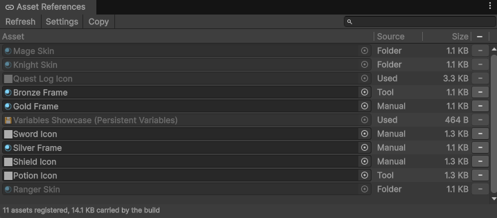

Asset references
Save a field that holds a project asset, by registering the assets a save can point at.
Save a field that holds an asset
A field that holds a project asset, or a list of them, saves and loads like any other field, as long
as the asset is registered. A deleted asset reads back as
null.
public class PlayerData : PersistentScriptableObject
{
public WeaponDefinition equippedWeapon;
public List<LevelDefinition> unlockedLevels = new();
}Register an asset
Register every asset a save can end up pointing at. Three things register one:
- A persistent asset, or a persistent scene object's ticked components, pointing at it.
- A folder you add to Registered Folders, in Project Settings > Persistent Asset.
- A call to
AssetRegistration.Register(asset)from an editor script.
To see what is registered, go to Tools > Persistent Asset > Asset References.

Warning: Every registered asset ships in the build and loads at
startup, the same cost as a preloaded asset. Registering a folder of heavy assets is paid for on every
launch, whether a save names them or not.
Note: Registration happens in the Editor. A build finds no asset that
was not included in it, so nothing registers at runtime.
Note: Addressables are not supported as asset references. A reference
resolves to the exact object the table holds, and an asset loaded through Addressables is a separate copy
of it, so a field pointing at that copy saves as empty. Save the asset's address as a string and load it
yourself instead.
Images, audio and runtime-created objects
An object your game creates while it runs has no id, so it saves as empty. Save what produced it and make it again on load, or write its bytes yourself, through a converter on Newtonsoft or a formatter on MemoryPack.
Note: A save that carries an image carries every byte of it. For a save
menu's thumbnails, use the slot registry instead.
Note: To point at an object in your scene, use
SceneRef.